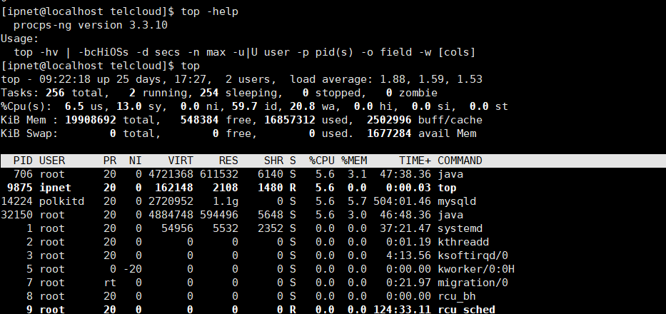

top命令详解
1. 参数详解

1、参数详解 $ top -help procps-ng version 3.3.9 Usage: top -hv | -bcHiOSs -d secs -n max -u|U user -p pid(s) -o field -w [cols] 1 2 3 4 -b：打印所有程序 -c：以命令行的形式显示程序名 -d：设置刷新间隔时间 -h：显示帮助 -H：线程切换 -i：不显示空闲进程 -n：设置刷新帧数，刷新n帧后退出 -p：指定进程号PID，可以指定多个，最多20个，-pN1 -pN2 …或-pN1，N2 [，…] -s：安全模式，不能使用交互命令 -u：监控用户，匹配有效ID或用户名，如监控root用户，top -uroot； -U：监控用户，匹配真实、有效、保存、文件所属ID或用户名 -v：打印版本号
2、交互命令 常用命令说明： Enter：按回车会刷新屏幕； h：显示交互命令帮助信息
交互式命令的帮助 Help for Interactive Commands - procps-ng version 3.3.9 窗口1:Def:累计模式关闭。系统:延迟3.0秒;安全模式。 Window 1:Def: Cumulative mode Off. System: Delay 3.0 secs; Secure mode Off.
Z,B,E,e Global: 'Z' colors; 'B' bold; 'E'/'e' summary/task memory scale l,t,m Toggle Summary: 'l' load avg; 't' task/cpu stats; 'm' memory info 0,1,2,3,I Toggle: '0' zeros; '1/2/3' cpus or numa node views; 'I' Irix mode f,F,X Fields: 'f'/'F' add/remove/order/sort; 'X' increase fixed-width
L,&,<,> . Locate: 'L'/'&' find/again; Move sort column: '<'/'>' left/right R,H,V,J . Toggle: 'R' Sort; 'H' Threads; 'V' Forest view; 'J' Num justify c,i,S,j . Toggle: 'c' Cmd name/line; 'i' Idle; 'S' Time; 'j' Str justify x,y . Toggle highlights: 'x' sort field; 'y' running tasks z,b . Toggle: 'z' color/mono; 'b' bold/reverse (only if 'x' or 'y') u,U,o,O . Filter by: 'u'/'U' effective/any user; 'o'/'O' other criteria n,#,^O . Set: 'n'/'#' max tasks displayed; Show: Ctrl+'O' other filter(s) C,... . Toggle scroll coordinates msg for: up,down,left,right,home,end
k,r Manipulate tasks: 'k' kill; 'r' renice
d or s Set update interval
W,Y Write configuration file 'W'; Inspect other output 'Y'
q Quit
( commands shown with '.' require a visible task display window )
Press 'h' or '?' for help with Windows,
Type 'q' or
Help for color mapping - procps-ng version 3.3.9 current window: 1:Def
color - 04:25:44 up 8 days, 50 min, 7 users, load average:
Tasks: 64 total, 2 running, 62 sleeping, 0 stopped,
%Cpu(s): 76.5 user, 11.2 system, 0.0 nice, 12.3 idle
Nasty Message! -or- Input Prompt
PID TTY PR NI %CPU TIME+ VIRT SWAP S COMMAND
17284 pts/2 8 0 0.0 0:00.75 1380 0 S /bin/bash
8601 pts/1 7 -10 0.4 0:00.03 916 0 R color -b -z
11005 ? 9 0 0.0 0:02.50 2852 1008 S amor -sessi
available toggles: B =disable bold globally (Off),
z =color/mono (On), b =tasks "bold"/reverse (On)
1) Select a target as an upper case letter, current target is T : S = Summary Data, M = Messages/Prompts, H = Column Heads, T = Task Information 2) Select a color as a number, current color is 1 : 0 = black, 1 = red, 2 = green, 3 = yellow, 4 = blue, 5 = magenta, 6 = cyan, 7 = white
3) Then use these keys when finished:
'q' to abort changes to window '1:Def'
'a' or 'w' to commit & change another,
Fields Management for window 1:Def, whose current sort field is %CPU
Navigate with Up/Dn, Right selects for move then
- PID = Process Id DATA = Data+Stack (KiB)
- USER = Effective User Name nMaj = Major Page Faults
- PR = Priority nMin = Minor Page Faults
- NI = Nice Value nDRT = Dirty Pages Count
- VIRT = Virtual Image (KiB) WCHAN = Sleeping in Function
- RES = Resident Size (KiB) Flags = Task Flags
- SHR = Shared Memory (KiB) CGROUPS = Control Groups
- S = Process Status SUPGIDS = Supp Groups IDs
- %CPU = CPU Usage SUPGRPS = Supp Groups Names
- %MEM = Memory Usage (RES) TGID = Thread Group Id
- TIME+ = CPU Time, hundredths ENVIRON = Environment vars
- COMMAND = Command Name/Line vMj = Major Faults delta
PPID = Parent Process pid vMn = Minor Faults delta
UID = Effective User Id USED = Res+Swap Size (KiB) RUID = Real User Id nsIPC = IPC namespace Inode RUSER = Real User Name nsMNT = MNT namespace Inode SUID = Saved User Id nsNET = NET namespace Inode SUSER = Saved User Name nsPID = PID namespace Inode GID = Group Id nsUSER = USER namespace Inode GROUP = Group Name nsUTS = UTS namespace Inode PGRP = Process Group Id
TTY = Controlling Tty
TPGID = Tty Process Grp Id
SID = Session Id
nTH = Number of Threads
P = Last Used Cpu (SMP) TIME = CPU Time
SWAP = Swapped Size (KiB)
CODE = Code Size (KiB)
1 2 3 4 5 6 7 8 9 10 11 12 13 14 15 16 17 18 19 20 21 22 23 24 25 26 27 28 29 30 31 32 33 X：设置任务列表之间的宽度 L：搜索字段； &：搜索下一个字段； <、>：显示上一页、下一页 R：升序或降序显示任务列表； H：进程和线程切换； V：树形显示，（显示内容没看懂） J：字段左对齐或右对齐切换； c：程序名和命令行格式切换； i：空闲程序显示或隐藏的切换； x：高亮显示排序字段； y：高亮显示正在运行的任务； Toggle: ‘z’ color/mono; ‘b’ bold/reverse (only if ‘x’ or ‘y’) z：彩色显示或单色显示的切换； b：当设置了x或y，即高亮显示时，再加上b，就会将高亮的带背景色； u、U：过滤有效或任何用户； n、#：设置最多显示的任务数，0表示不限制； C：显示坐标； k：杀死指定PID的进程； r：调整优先级； d、s：设置间隔时间； W：写入配置文件； Y：写入配置文件，并重新加载 q：退出
3、显示信息详解 top - 15:00:44 up 6 min, 3 users, load average: 0.21, 0.48, 0.30 Tasks: 194 total, 1 running, 193 sleeping, 0 stopped, 0 zombie %Cpu(s): 12.8 us, 5.1 sy, 0.0 ni, 82.2 id, 0.0 wa, 0.0 hi, 0.0 si, 0.0 st KiB Mem: 4046976 total, 1182232 used, 2864744 free, 59872 buffers KiB Swap: 4191228 total, 0 used, 4191228 free. 462400 cached Mem
PID USER PR NI VIRT RES SHR S %CPU %MEM TIME+ COMMAND
2308 zet 20 0 1271772 186756 67412 S 7.6 4.6 0:29.29 compiz
1300 root 20 0 373560 108052 31176 S 4.3 2.7 0:08.53 Xorg
2738 zet 20 0 599960 34704 26408 S 4.3 0.9 0:01.74 gnome-terminal
1937 zet 20 0 121840 3208 2836 S 0.7 0.1 0:00.96 VBoxClient
97 root 20 0 0 0 0 S 0.3 0.0 0:00.16 kworker/u2:4
1960 zet 20 0 40196 3512 2164 S 0.3 0.1 0:00.67 dbus-daemon
2835 zet 20 0 30604 3448 2912 R 0.3 0.1 0:00.05 top
1 root 20 0 33792 4312 2684 S 0.0 0.1 0:01.78 init
1
2
3
4
5
6
7
8
9
10
11
12
13
14
15
第一行：top - 15:00:44 up 6 min, 3 users, load average: 0.21, 0.48, 0.30
15:00:44 — 当前系统时间
up 6 min — 系统运行时间（在这期间没有重启过）
3 users — 当前有3个用户登录系统, load average: 0.21, 0.48, 0.30
load average: 0.21, 0.48, 0.30 — load average后面的三个数分别是5分钟、10分钟、15分钟的负载情况。
load average数据是每隔5秒钟检查一次活跃的进程数，然后按特定算法计算出的数值。如果这个数除以逻辑CPU的数量，结果高于5的时候就表明系统在超负荷运转了。
第二行：Tasks: 194 total, 1 running, 193 sleeping, 0 stopped, 0 zombie Tasks — 任务（进程），系统现在共有194 个进程，其中处于运行中的有1个，193 个在休眠（sleep），stoped状态的有0个，zombie状态（僵尸）的有0个。
第三行：%Cpu(s): 12.8 us, 5.1 sy, 0.0 ni, 82.2 id, 0.0 wa, 0.0 hi, 0.0 si, 0.0 st
12.8 us — 用户空间占用CPU的百分比。 5.1 sy — 内核空间占用CPU的百分比。 0.0 ni — 改变过优先级的进程占用CPU的百分比 82.2 id id — 空闲CPU百分比 0.0 wa — IO等待占用CPU的百分比 0.0 hi — 硬中断（Hardware IRQ）占用CPU的百分比 0.0 si — 软中断（Software Interrupts）占用CPU的百分比 0.0 st —超级管理进程占用CPU的百分比
第四行：KiB Mem: 4046976 total, 1182232 used, 2864744 free, 59872 buffers 内存使用情况： 4046976 total — 物理内存总量 1182232 used — 使用中的内存总量 2864744 free — 空闲内存总量 59872 buffers — 缓存的内存量
第五行：KiB Swap: 4191228 total, 0 used, 4191228 free. 462400 cached Mem 交换分区： 4191228 total — 交换区总量 0 used — 使用的交换区总量 4191228 free — 空闲交换区总量 462400 cached — 缓冲的交换区总量
第六行：PID USER PR NI VIRT RES SHR S %CPU %MEM TIME+ COMMAND 各个进程的监控情况： PID— 进程ID USER— 进程所有者的实际用户名。 PR— 进程的调度优先级。这个字段的一些值是’rt’。这意味这这些进程运行在实时态。 NI— 进程的nice值（优先级）。越小的值意味着越高的优先级。负值表示高优先级，正值表示低优先级 VIRT— 进程使用的虚拟内存。进程使用的虚拟内存总量，单位kb。VIRT=SWAP+RES RES— 驻留内存大小。驻留内存是任务使用的非交换物理内存大小。进程使用的、未被换出的物理内存大小，单位kb。RES=CODE+DATA SHR— SHR是进程使用的共享内存。共享内存大小，单位kb S— 这个是进程的状态。它有以下不同的值:
D - 不可中断的睡眠态。 R – 运行态 S – 睡眠态 T – 被跟踪或已停止 Z – 僵尸态 1 2 3 4 5 %CPU— 自从上一次更新时到现在任务所使用的CPU时间百分比。 %MEM— 进程使用的可用物理内存百分比。 TIME+— 任务启动后到现在所使用的全部CPU时间，精确到百分之一秒。 COMMAND— 运行进程所使用的命令。进程名称（命令名/命令行）